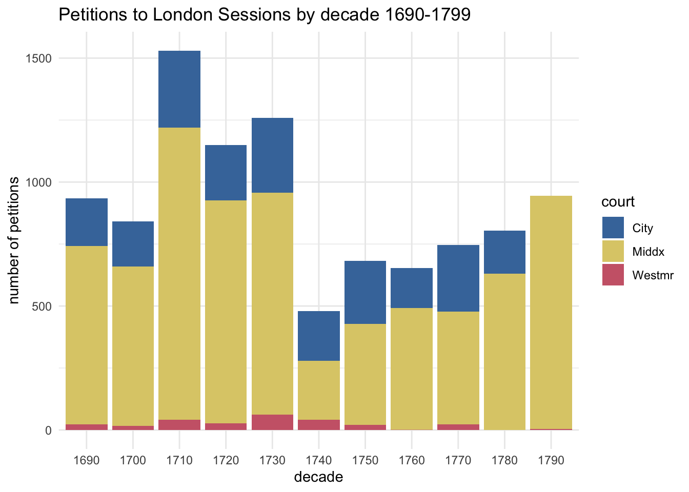
Gender, institutions and the changing uses of petitions in 18th-century London
LL
petitioning
womens history
When and Why do Petitions Matter?
This post is an extended version of my paper for the April 2019 workshop held by the AHRC Research Network on Petitions and Petitioning from the Medieval Period to the Present, on the theme Petitioning in Context: when and why do petitions matter?
The network is explicitly interdisciplinary, international and comparative: it brings together social and political historians, political and social scientists, literary and media scholars, as well as officials administering legislative e-petitions systems and representatives of NGOs using e-petitions in their campaigns. In terms of chronological and geographical scope, the network covers petitions and petitioning from the medieval period to the present day in polities across Europe and North America.
Why do “prosaic” petitions matter?
“Prosaic” petitions is a term I recently discovered in an article by Alan MacDonald (2018) which I was particularly taken with as a description of the London Lives petitions, and the many thousands of 17th-18th-century petitions like them.
I think they mattered, as MacDonald argues very succinctly, in two essential ways. Firstly, they mattered to petitioners.
Most of the time, petitioning concerned ordinary things, but these things were important to those making the requests…
And they provide
an important foundation from which interactions between governors and the governed can be understood… Prosaic petitioning can enhance our understanding of the shifting dynamics of power in a small, early modern state (MacDonald 2018, p.294)
Both MacDonald and Laura Stewart (2018) also use the term “everyday” petitions; these petitions definitely aren’t about supporting political causes or agitating for political change.
Nonetheless, they do embody conflict and contested authority. What I mean by that is not just that prosaic petitions are about grievances and disputes but also that, very often, those grievances concern the actions (or inaction) of social superiors or authorities, and are presented to another institutional authority for adjudication, with potentially face-threatening consequences for the subject of the complaint. However conservative the request and humble the language, that is potentially disruptive. (In fact, surely the language is “humble” precisely in order to soften the threat to the hierarchical order of things.)
How, and for whom, petitioning mattered changed significantly in London over the course of the 18th century; changes that were strongly gendered. This is my initial attempt to explore those changes.
The petitions and their context
The London Lives Petitions data consists of metadata and texts for about 10,000 petitions addressed to three London courts, the Middlesex, City of London and Westminster Quarter Sessions between 1690 and 1799.
Quarter Sessions (or Sessions of the Peace) represented a crucial layer of county/city-based justice and government in early modern England and Wales, which were presided over by Justices of the Peace (rather than professional judges or administrators). As such, surviving petitions to these courts can cover a wide range of subjects including poor law, local taxes, the upkeep of roads and bridges, employment disputes, domestic abuse and a wide range of personal grievances.
The petitions data was extracted from three massive series (about 80,000 pages of material) of Sessions Papers which were digitised for the London Lives project (2010). Like their counterparts in other archives (under varying titles including sessions files or sessions bundles), the SPs contain a diverse assortment of documents related to the courts’ everyday business, not just petitions. (There is a fourth LL series containing a handful of petitions, the Old Bailey Sessions Papers, but they’re rather different and aren’t considered here.)
Making petitions count
Petitioning in numbers
This graph tells a story of the rise and fall of petitioning in a rapidly growing city.
The data is dominated by the Middlesex Sessions, which accounts for about 3/4 of all petitions. The Middlesex Sessions were held more often than other counties (usually 8 times a year) and dealt with much larger volumes of business. (Westminster inhabitants could also take petitions to Middlesex, which is at least part of why the numbers are so small.)
Record survival is the bane of the historian’s existence and this dataset is no exception: the survival of the Middlesex Sessions Papers in the 1740s is very poor, with an obvious impact on the reliability of the dataset for that decade. The City of London series ends in 1789 (except for a single document in 1796). Various files in all three series were not digitised because they were deemed too “unfit”, the condition of documents in the files can vary considerably, and (last but not least) digitisation was based on black and white microfilms. So there are various gaps and quality problems to be borne in mind.
The numbers of petitions are quite similar in the 1690s and 1790s (~1000). But when London’s massive population growth during the 18th century (c. 600,000 in 1700 to > 1 million people by 1800) is taken into account, this represents a substantial decline in petitioning.
The graph is more interesting than a straightforward decline, though; the most striking feature is the sudden spike in the 1710s (~1500 for the decade), dropping off a bit in the 1720s and 30s (the 3 busiest years in the entire period were 1715-1717).
The 1740s survival problem makes it difficult to assess exactly what happened in that decade, but there’s a very clear and substantial drop between the 1730s and 1750s (~700), followed by a more gradual increase in numbers. If we bear in mind that the 1790s total would be quite a bit larger if it weren’t for the lack of City of London records, the 1750s-1790s growth may be roughly in line with the growth of the population. But, at the same time, that increase was a good deal slower than growth in the general amount of business being dealth with by the courts - at least, as measured by the volume of surviving records in the Sessions Papers.
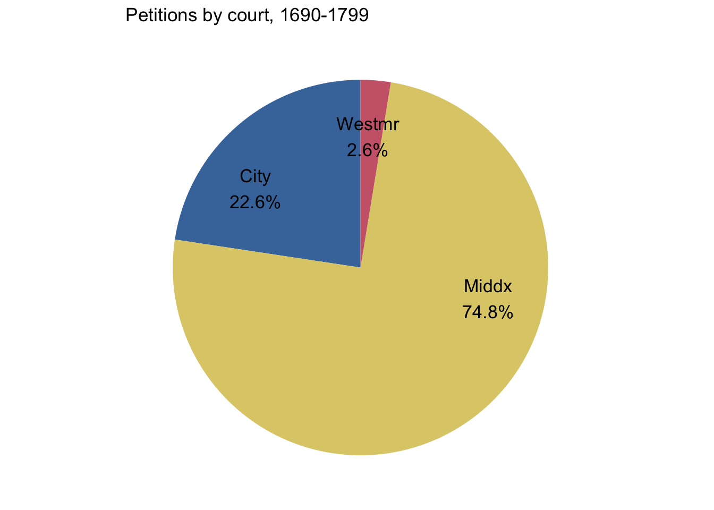
Petitioners
Another caveat: the name data is far from perfect (it relies on the London Lives name tagging), and will need further work. I think the analysis is generally reliable, but it’s best not to focus too much on exact numbers!
The petitions were divided into two broad categories for this analysis:
- from named individuals (mostly single petitioners but also groups) (5017 petitions)
- from institutions; includes guilds and hospitals, but the majority are parishes. It also includes some petitions from groups of unnamed individuals that don’t really quite fit under the heading (like “the prisoners in Newgate Gaol”), but they are small numbers. (5007 petitions)
Petitions from named individuals were categorised by gender derived from the petitioners’ first names. “Female” petitions include at least one petitioner with a female name. As a result, the few mixed group petitions (~270) are counted as “female”.
Individuals petitioning in decline
Named individuals petitions account for the fall in numbers and most of the (relative) decline; institutions petitions held relatively steady relative to population. The percentage of petitions which came from named individuals fell from 67% in 1690s to 37% in the 1790s.
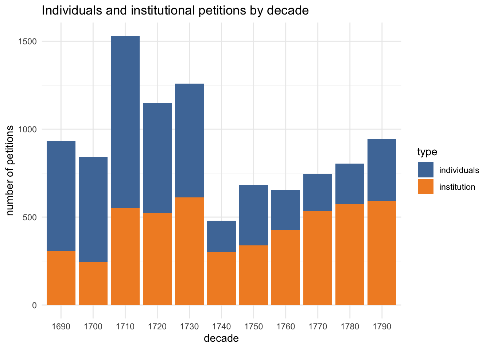
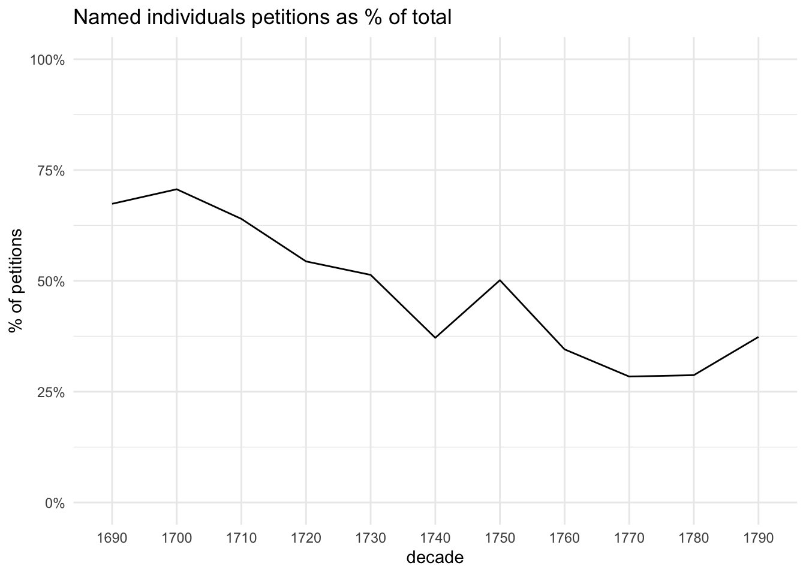
Gender and petitioning
Overall about 20% of petitioners were women, but there was a substantial decline over time.
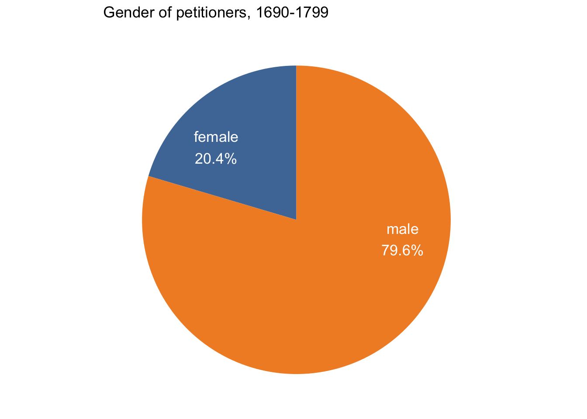
In the 1690s, almost 30% of named petitioners were women; the percentage peaked in the 1700s, and then fell in almost every decade. By the 1790s, it was at just 5%.
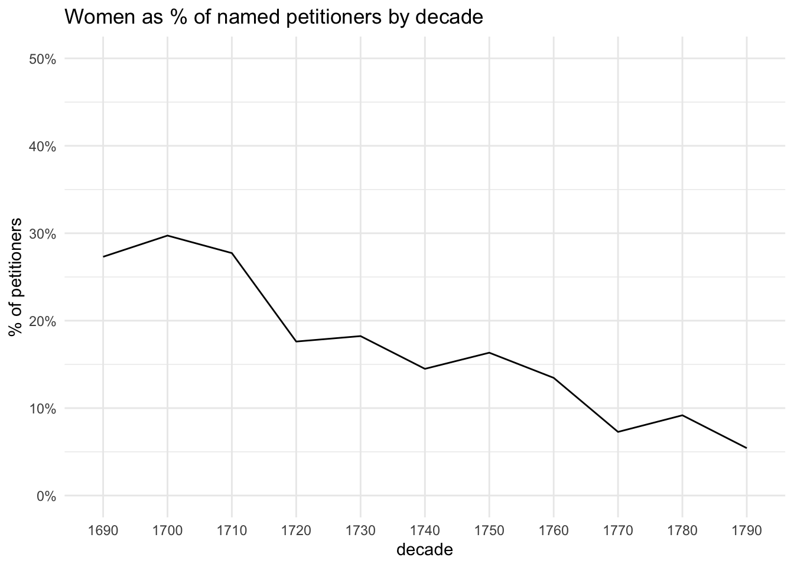
The vanishing female
But the disappearance of women is even more marked when looking at all petitions rather than petitioners.
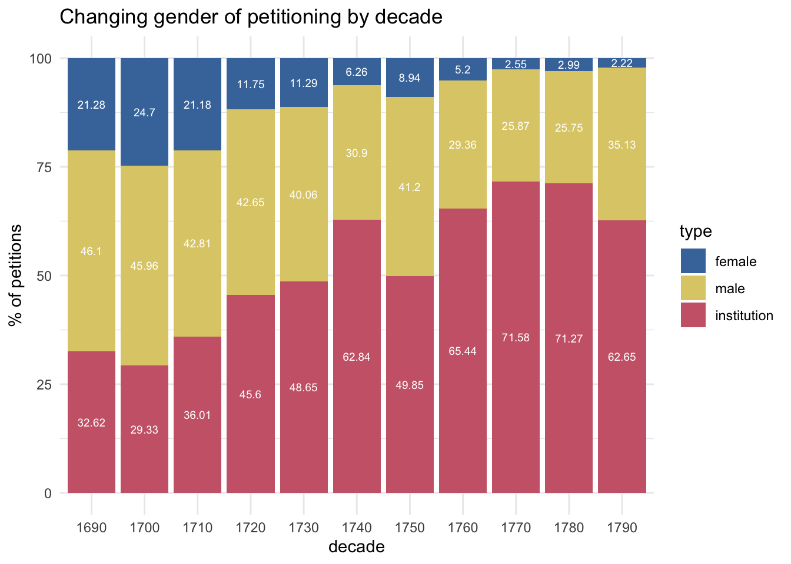
In the 1690s 21% of petitions were “female”, 46% male and 33% institutional; in the 1790s this was respectively 2%, 35% and 63%. There was a decrease in male petitioning, but it was much less pronounced.
Language at a distance
How do you “read” 10000 petitions? This has been a tricky question for me ever since I made the dataset. Petitions are very unlike many of the literary texts (novels, plays, etc) to which “distant reading” techniques have most often been applied; popular digital humanities like topic modelling really don’t work on them very well at all.
A high proportion of petitions’ language is not particularly meaningful: they contain a lot of formulaic legal language, as well as a lot of personal and place names. The spelling is also highly variable, as is the quality of the transcription in this case (though I’ll be using a version of the data that’s been regularised to some extent using VARD 2.)
For this analysis I focus on two linguistic measures:
- word counts
- word frequencies
Even though they seem simple, they can be revealing and valuable, I think, as a starting point for close reading.
Petition lengths
These petitions are short; the majority are 150-250 words long. But they were getting longer: in the 1690s the median length was 176 words; by the 1790s it had risen to 232 words.
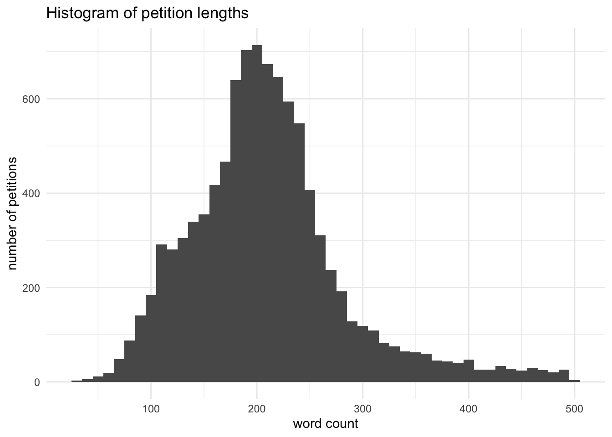
(only ~160 are >500 words long, which is why I’ve felt justified in truncating some graphs at 500 words)
Comparing petition lengths by category
Institutions petitions are much less varied in length, as well as being longer than those from individuals.
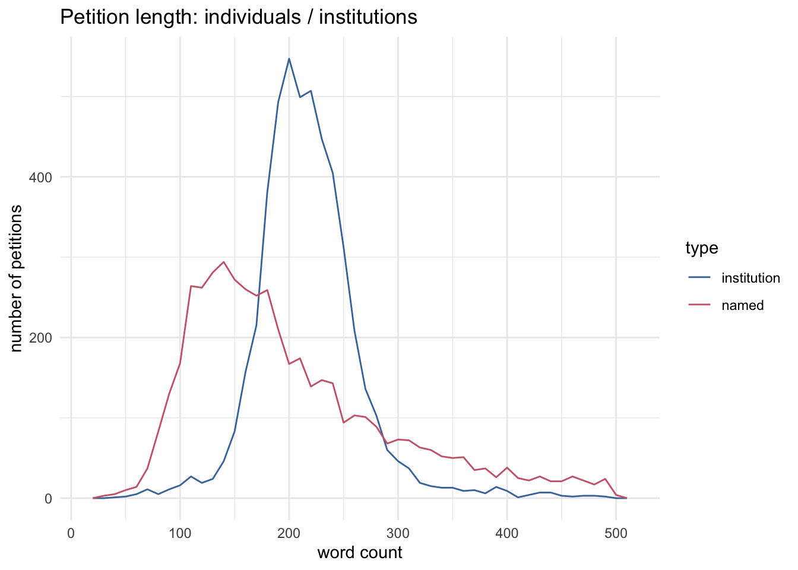
If male and female petitions are separated out, they show quite a similar distribution compared to institutions.
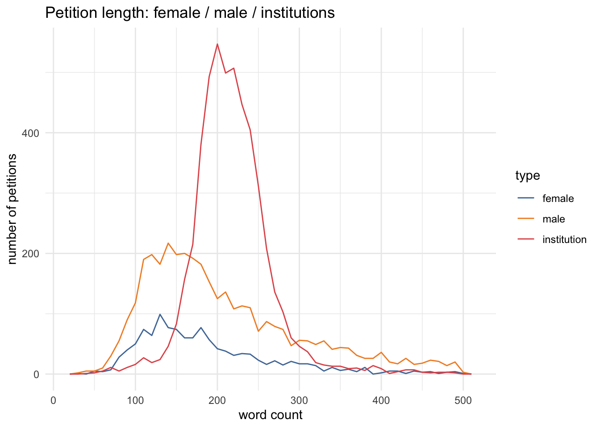
In terms of average length (median) male petitions (194 words) seem to sit almost midway between female (172) and institutional (220), but this is one of those cases where an average doesn’t tell the whole story.
A boxplot also highlights how female and male petitions are more like each other than they are like petitions from institutions, and how little variation there is in the length of institutions petitions. (If you’re not familiar with boxplots, check out this earlier post.)
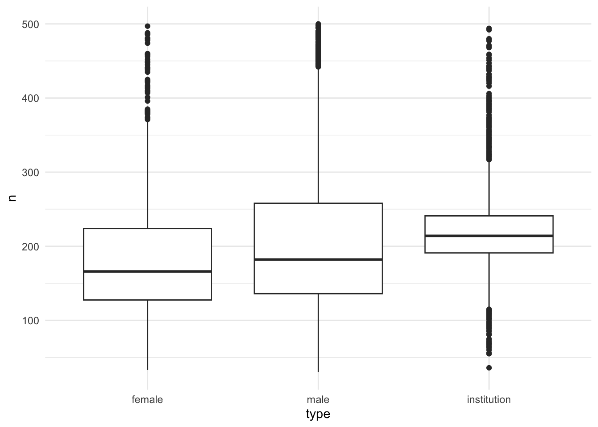
Comparing word frequencies
The technique and code for these graphs, which I love, has been borrowed from Julia Silge and David Robinson’s tutorial on Text Mining with R. Once again the corpus is divided into pairs (male/female, individual/institution) for comparison. The graphs highlight distinctive words (more frequently used) in each category.
How to read each graph:
- first, centre your attention on the red diagonal line
- words above the line are more frequent in the category indicated on the vertical axis; words below the line are more frequent in the category on the horizontal axis
- the further away from the red line, the more distinctive the word is to that category
- towards the top right corner you find higher-frequency words (“the”, “and”, etc); towards the bottom left less frequently used words (very very low frequency words (<0.00001%) have been filtered out in these versions)
(Also, if you want to see them more clearly, try right-clicking on the image and select “open image in new tab” or similar from the options. Then you’ll get to view the full size image.)
The graphs should be treated with some care and seen primarily as exploratory:
- words must appear in both categories to appear in the graph (though that shouldn’t matter too much in this case)
- even then, not all words that appear in both categories will be visible; the graph is made more readable by removing some overlapping text labels. (I think this might be particularly misleading near the bottom left where there are actually many overlapping words.)
First, let’s compare male and female petitions.
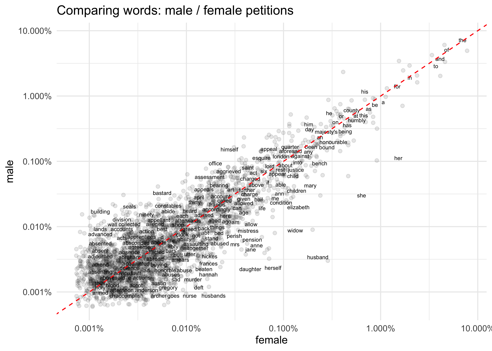
With the caveats noted, what does the graph draw to our attention?
In female petitions, there is a strong focus on the family and household: (eg) “married”, “nurse”, “daughter”, “children”; or on female work and sources of power: (eg) “mistress”.
There’s also a number of words on the female side that seem to speak to women’s physical and/or economic vulnerabilities: (eg) “abused”, “peril”, “barbarous”, “deplorable”, “subsist”.
In contrast, “male” words have much more emphasis on law, money, and public office/power and regulations: (eg) “office”, “accounts”, “seals”, “appeal”. There is less emotion on show; and the only noticeable reference to family is “bastard”, which will be from men complaining about being made to pay for the upkeep of their illegitimate offspring.
Comparing the two sides, something else can be inferred: female petitions talk about men much more than male petitions talk about women. For example, both “husband(s)” and “wife” appear on the female side. More subtly, words like “her” and “she” are much further away from the centre line than “he” and “his”.
I think the number of women’s names on the female side is probably due to the fact that there was a very small pool of available female names in the 18th century, and these are most likely just the petitioners’ own names; but it could also indicate women talking about other women, which would be interesting - it’s certainly worth taking a closer look.
For the curious, here is a version of the graph showing all the overlapping labels. It’s not pleasant!
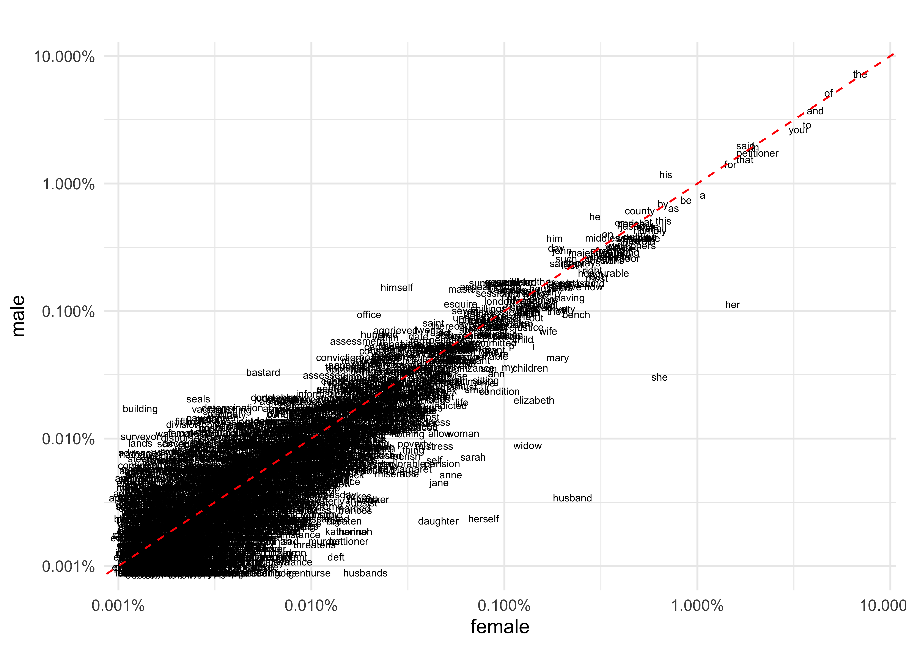
And now the comparison for institutions and individuals.
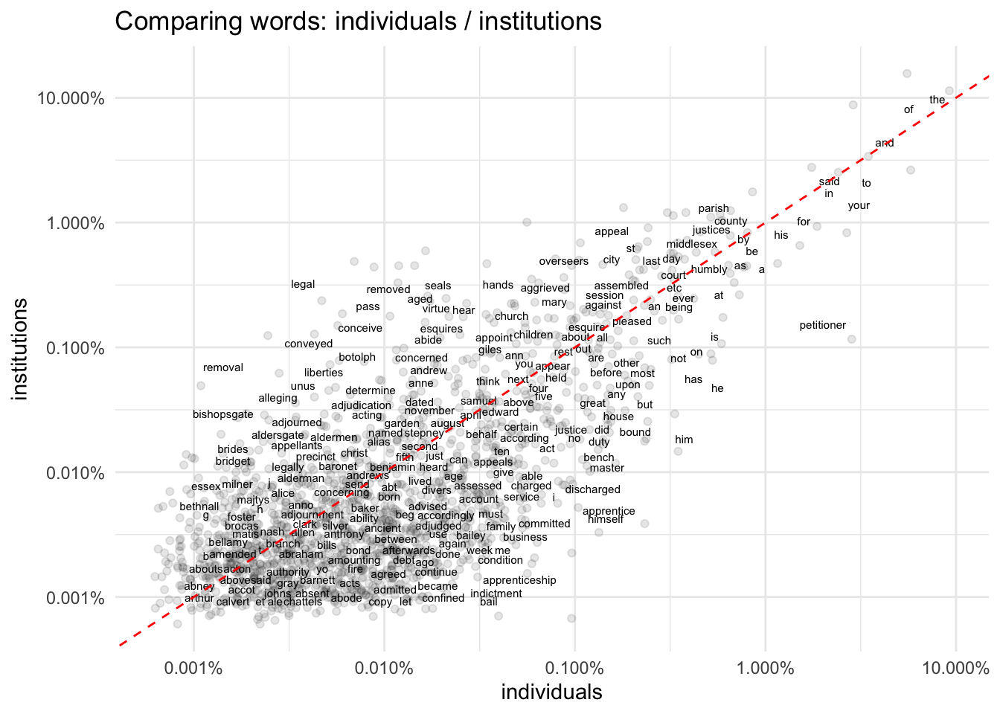
On the institutions side, this reinforces (yet again) the lack of diversity; many of the words are parish or county names, and most of the rest are legal/administrative: “legal”, “seals”, “alleging”, “acting”, “aggrieved”.
Now, anyone who’s studied the social history of the period may by now be getting a good idea of what most of these petitions are actually about: they’re appeals from parishes to which paupers have been sent under the Acts of Settlement. The 1662 Act empowered JPs to order the removal of paupers who were not legally “settled” in a parish to their last parish of settlement
Provided alwaies that all such persons who thinke themselves agreived by any such Judgement of the said two Justices may appeal to the Justices of the Peace of the said County att theire next Quarter Sessions whoe are hereby required to doe them justice according to the merits of theire Cause
These appeals constitute the vast majority of institutional petitions.
On the named individuals side, one thing you’ll notice is that these are largely what were “male” words in the previous graph. We’d expect that female words might struggle to become visible because of their smaller numbers (remembering that not only are there fewer female petitions but also their petitions were shorter, so the subcorpus will be a lot smaller).
But there’s a bit more to it. It’s possible once again to separate out male and female for comparison with institutions, and rather like word lengths the differences for male/female are not so obvious. In other words, the language of institutional petitions seems to be so different that it largely outweighs gendered differences.
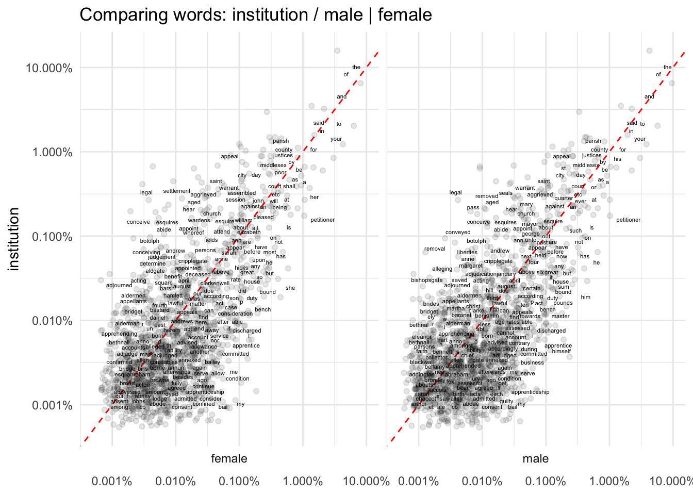
So what?
Numbers only take us so far: what do they mean?
I think that quantitative analysis of early modern petitioning matters for at least two major reasons.
because petitions are so ubiquitous in early modern Europe (and many other societies), and they were used for many different things, it’s not a great idea to make serious arguments about them simply by picking your favourite types or examples.
as this case study suggests, that ubiquity can be deceptive; the significance and impact of early modern petitioning varied enormously, chronologically, geographically and socially.
Early modern petitioning didn’t just bumble along at unchanging levels, being used by the same sort of people for the same things with the same effects. In just one city in the space of one century, the uses of petitioning could change substantially.
So, how to think about both changes and continuities? Petitions mattered to petitioners as a means to try to access power, and I’ve been thinking about them recently in terms of two forces pulling in different directions: opportunity and access vs rules and restrictions (in particular since reading Martin Almbjär’s recent article on petitioning as safety valve). That suggests an inherent instability, even though balance was maintained in normal circumstances, which is why I think petitions can equally be associated with radical changes and upheavals and with deeply reactionary politics.
(Crisis, especially economic crisis, could of course also stimulate the need for petitions, whether from parishes experiencing a growing burden on the poor rates, or individuals struggling to make ends meet and looking for a reduction in their tax burden or additional relief. But petitions might not be the only way to respond to that need.)
So I think it’s vital to look closely at the shifting balance between opportunity and restriction in local contexts, at different moments in time, and how this varied for different social groups.
Opportunity and agency
For the city’s poorest inhabitants, the 1710s and 1720s represented a moment of real, if still circumscribed, agency, in which the divided politics of the parish and the elite gave them a voice. (Hitchcock and Shoemaker, London Lives, p.99)
The surge in London petitioning in the 1710s coincided with regime change, conflict and major challenges to public order; even though Hitchcock and Shoemaker are mainly thinking of riot and street protest, and perhaps of poorer groups than many petitioners, their argument seems relevant here.
Almbjär also notes that social unrest often occurred in tandem with petitioning and litigation, as for example in the 1640s in England. What’s more, London’s increase in petitioning in the 1710s was paralleled by a rise in national, mass political petitioning (not necessarily radical in nature!), as shown by Philip Loft’s work on petitions to the House of Lords.
However, the connections must be complicated: the crises of the early 18th century may have created opportunities for women and poorer petitioners - but also stimulated institutional petitioning (of which the poor were most often the direct targets). And how to draw a line from collective political petitions to Parliament to the prosaic petitions of London inhabitants?
Rules and restrictions
I think we can’t underestimate the importance of institutional regulation and barriers to petitioning; and regulation didn’t have to be explicitly intended to reduce petitioning to have this effect.
London magistrates made repeated moves during the 18th century to assert control and regulate petitioning. The most intriguing I’ve seen so far is an order by Middlesex Sessions in April 1729:
This Court taking Notice that severall Petitions are from time to time presented purporting to be the Petitions of particular Persons but not Signed by them or any other for them Doth order that noe such Petition to be hereafter preferred to the Court of Generall Quarter or Generall Sessions of the Peace for this County shall be received unless such Petition be Signed by the Petitioner therein Named or some Person duely authorized to Sollicite for such Petitioner and that the Chairman doe take care accordingly.
It’s intriguing because it was perfectly normal for petitions throughout the 17th century (and, as far as I was aware, the 18th century as well), at all levels of the system from local courts to petitioning the Crown or Parliament, to be unsigned. So why were JPs suddenly concerned about this?
And it seems that the order was enforced and effective. The data I compiled in an initial effort to explore this is… not good so I won’t quote numbers here (!) but it shows a rapid and substantial increase in the proportion of petitions from individuals that were signed. And, though we don’t have order books for the City of London Sessions, the data indicates that exactly the same thing happened there.
The order was not a literacy test; signing by mark was perfectly acceptable. But nonetheless, it seems to represents part of a process of formalising procedures surrounding petitioning that could create small but significant disincentives to petitioners. It also looks as though the rate of signing by mark rose considerably following the 1729 order, so maybe people did feel some kind of social embarrassment at revealing their lack of literacy to magistrates.
A number of Middlesex orders at various dates complained that (certain types of) petitions were being brought to the court too late and insisted on deadlines for them to be dealt with at the proper time, eg this in February 1752:
Whereas the dispatching the Business of the Sessions at the Latter Part of the Sessions Week hath been very much hindred and remided by hearing the Petitions for discharging Apprentices which being Preferred late in the Sessions have been Appointed to be heard on Friday or Saturday in such Week, for preventing such Inconveniencys for the Future It is Ordered by this Court that no Petition for discharging an Apprentice be hereafter Recieved after the Last Sitting of the Court the second Day of Each Sessions of the Peace of to this County.
These also highlight the growing pressures of business on the Middlesex Sessions and the difficulties the court experienced in responding to a rapidly growing population. The changes it needed to make to keep up with those pressures, however, might well have made the court a more forbidding and heavily regulated place - perhaps especially for poor and female petitioners who were less familiar with the courts to begin with.
It seems to me that changes in petitioning, conversely, might make a useful case study in how local government in London was changing more generally, and point towards more “modern”, bureaucratic forms of mediating disputes and resolving grievances. It isn’t a coincidence, I think, that many parish petitions about pauper removals were entitled “The petition and appeal of…” (and the frequency of the word “appeal” in petitions increased noticeably between 1690 and 1799). There was also a big increase over the century in documents in the Sessions Papers that were related to petitions; I haven’t yet explored these in depth, but they certainly included draft orders, reports, schedules/lists and other responses to petitions.
Final thoughts
And so, I think that more in-depth exploration of these associated records is likely to show that there was a growing emphasis on petitions with well-defined legal contexts and procedures - not simply those related to the Poor Law but also the licensing of drinking establishments and entertainments, building regulations, employment contracts, etc - and that these gradually crowded out more informal prosaic petitions from individuals seeking less well-defined help. And, given male dominance of government and legal institutions, this had a particularly marked impact on petitioning by women.
References
Almbjär, Martin, ‘The problem with early-modern petitions: safety valve or powder keg?’, European Review of History: Revue européenne d’histoire (2019)
Hitchcock, Tim, and Robert Shoemaker, London Lives: Poverty, Crime and the Making of a Modern City, 1690-1800, 2015.
Loft, Philip, ‘Involving the public: parliament, petitioning, and the language of interest, 1688–1720’, Journal of British Studies, 55:1 (2016)
MacDonald, Alan, ‘Neither inside nor outside the corridors of power: prosaic petitioning and the royal burghs in early modern Scotland’, Parliaments, Estates and Representation, 38:3 (2018)
Stewart, Laura, ‘Petitioning in early seventeenth-century Scotland, 1625–51’, Parliaments, Estates and Representation, 38:3 (2018)